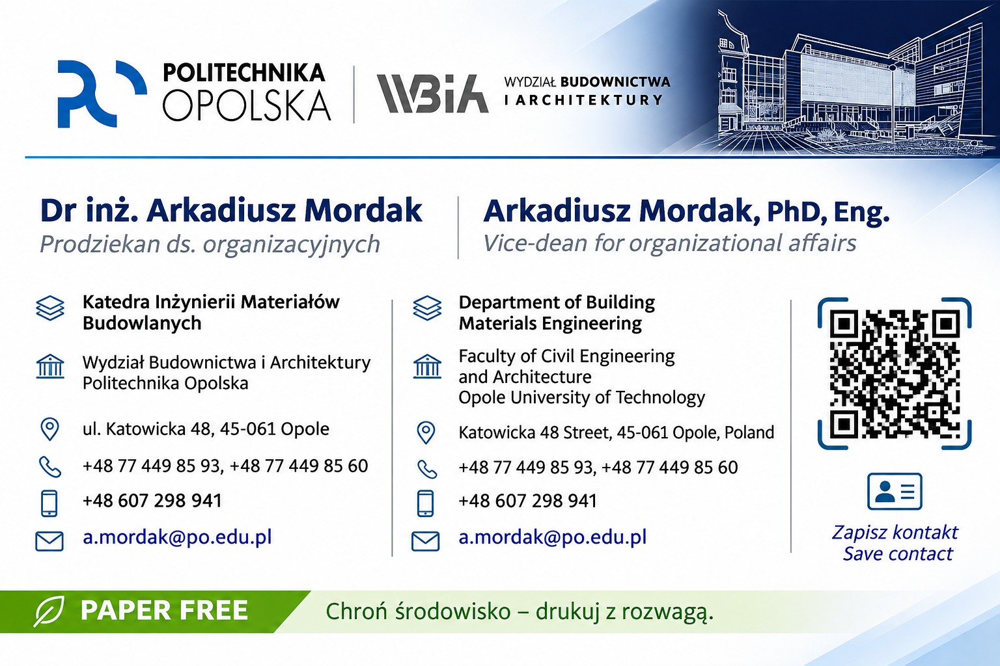
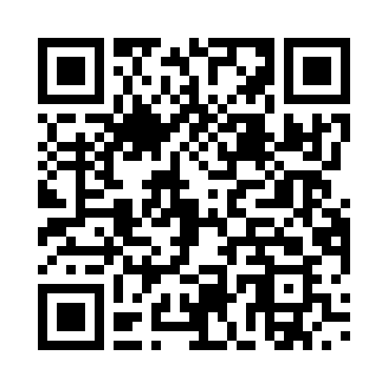

WIZYTÓWKA / BUSINESS CARD
Arkadiusz Mordak


Nie udało się wczytać grafiki. Dane kontaktowe znajdziesz poniżej.
The artwork could not be loaded. Contact details are listed below.
QR otwiera stronę wizytówki. Kontakt pobierzesz przyciskiem „Zapisz kontakt”. The QR opens this page. Use “Save contact” to download the contact.
Zeskanuj kod / Scan the code
arekm2506.github.io/wizyt-wka-2026/Zeskanuj kod aparatem drugiego telefonu, aby otworzyć wizytówkę.
Scan with another phone’s camera to open the business card.
Kontakt / Contact
Dr inż. Arkadiusz Mordak / Arkadiusz Mordak, PhD, Eng.
Prodziekan ds. organizacyjnych
Vice-dean for organizational affairs
Katedra Inżynierii Materiałów Budowlanych
Department of Building Materials Engineering
Wydział Budownictwa i Architektury, Politechnika Opolska
Faculty of Civil Engineering and Architecture, Opole University of Technology
+48 77 449 85 93 · +48 77 449 85 60
+48 607 298 941
a.mordak@po.edu.pl
Link do wizytówki / Business card link
Dodaj na ekran telefonu / Add to Home Screen
Android (Chrome): otwórz opublikowaną stronę, wybierz menu ⋮ → „Dodaj do ekranu głównego” (czasem „Zainstaluj aplikację”) → „Dodaj”.
iPhone (Safari): otwórz opublikowaną stronę, wybierz „Udostępnij” → „Do ekranu początkowego” → „Dodaj”. Nazwij skrót „Moja wizytówka”.
Android: Chrome menu → Add to Home screen. iPhone: Safari → Share → Add to Home Screen. Menu names may vary.
Skrót otwiera stronę i wymaga internetu. Internet connection required.